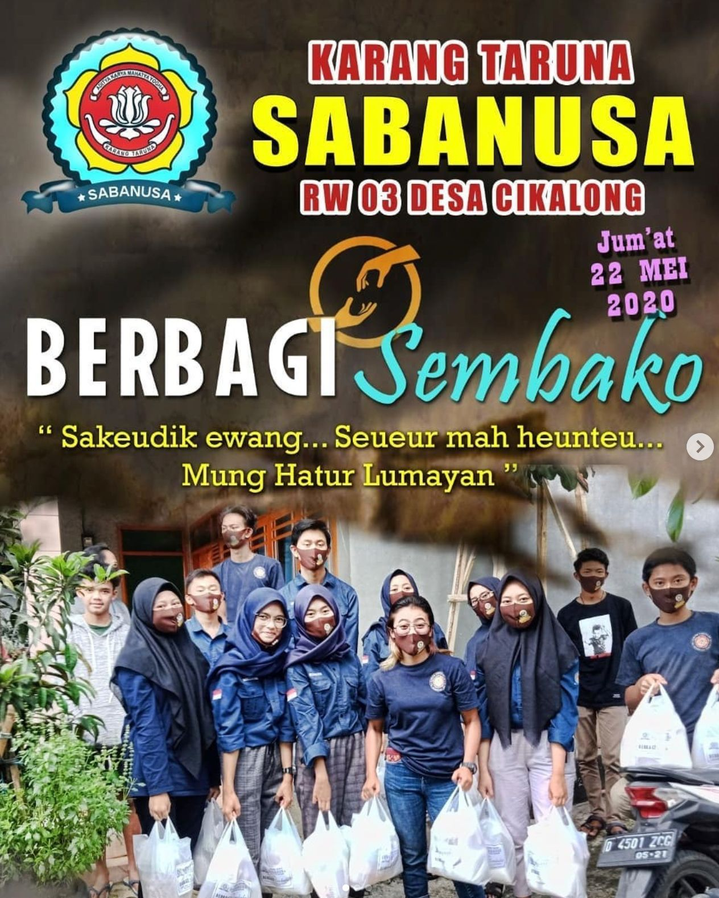

Berbagi Sembako kepada Warga RW 03 Desa Cikalong
Deskripsi Kegiatan
Kegiatan sosial berbagi paket sembako kepada warga yang membutuhkan sebagai wujud kepedulian SABANUSA kepada masyarakat.
Cerita Lengkap
Di tengah pandemi COVID-19, SABANUSA menginisiasi program sosial "Berbagi Sembako" pada 22 Mei 2020. Tujuan utama adalah membantu warga RW 03 yang terdampak pembatasan sosial.
Tim SABANUSA mengumpulkan donasi dari anggota dan simpatisan, kemudian menyusun paket sembako berisi beras, minyak goreng, gula, telur, dan bahan pokok lainnya. Total 75 paket berhasil disiapkan.
Pengantaran dilakukan door to door dengan protokol kesehatan ketat. Warga yang menerima paket sangat terharu dan berdoa agar pandemi segera berakhir. Beberapa lansia menangis haru menerima bantuan.
Kegiatan ini memperkuat citra SABANUSA sebagai organisasi peduli dan siap bergerak saat dibutuhkan masyarakat. Jiwa sosial pemuda terbukti dalam aksi nyata ini.